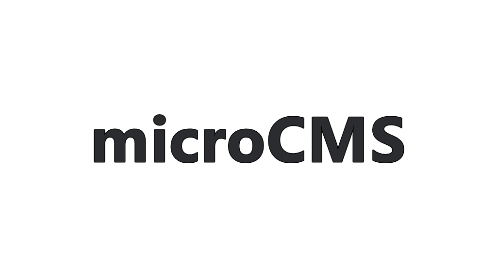
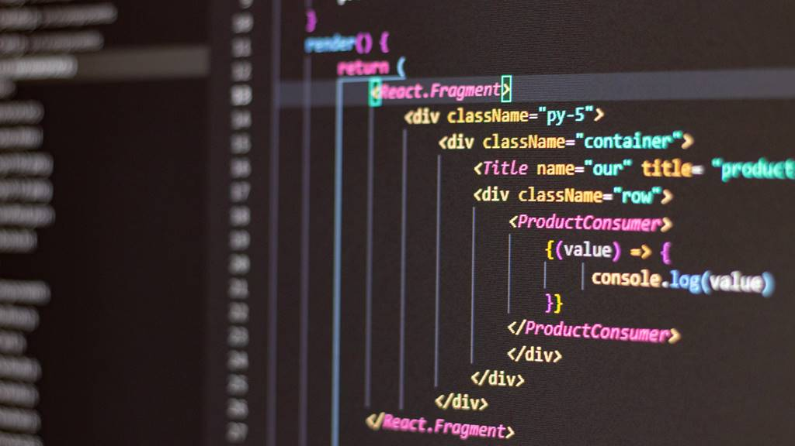
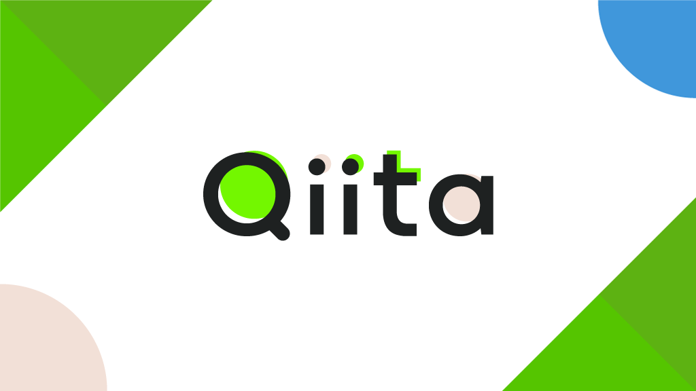
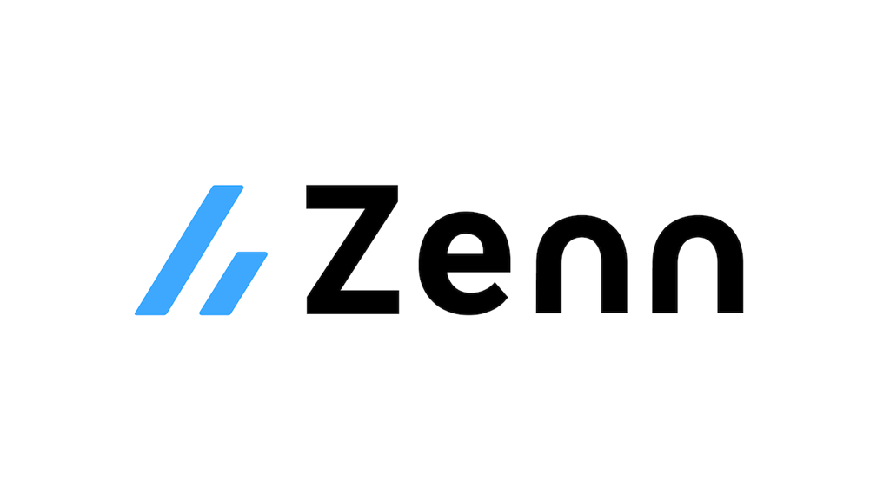

NEW

2023/04/12
Markdownブログ運用
NetlifyでのBlog運用にあたってデフォルト値を設定することは可能

2023/04/12
article-00015は検知可能か？
2つ目ののmicroCMSです。

2023/04/11
Next.js×NetlifyでMarkdownブログ環境を構築
Next.jsとNetlifyでMarkdownのブログ記事を作成ができるCMSを導入しました。

2023/04/11
0412microCMSで作成したブログを更新
今回は、はじめてのmicroCMSをNext.jsとNetlifyを活用しGithubActionsを利用して作成しました。

2022/12/22
JavaScript基礎学習①
フロントエンド言語を学習する際に必須なJavaScriptの基礎を習得していきます。

2022/12/17
読んだQiita記事一覧
Qiitaを必要に応じて読み、拝見したものを記録します。

2022/12/12
読んだZenn記事一覧
Zennを必要に応じて読み、拝見したものを記録します。

2022/11/25
WEB3層構造とは？
Webブラウザからのリクエストを受けて返すまでの「Webサーバー、APサーバー、DBサーバー」で編成されるWebアプリケーションの構造化の原則を定義しています。